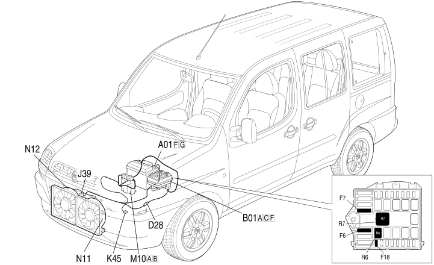

E5020 ENGINE COOLING - LOCATION OF COMPONENTS
- Path
- Electrical equipment > 1 ELECTRICAL FUNCTIONS > E50 ENGINE CONTROL AND MANAGEMENT SYSTEMS > E5020 ENGINE COOLING > E5020 ENGINE COOLING - LOCATION OF COMPONENTS
- Kind
- topic
- Applies to
- engines: 1.3 JTD 16V; all production periods; only with equipment: Climate control system
- Interactive page
- https://sloeber94.github.io/elrnDB-fDbl/en/#/223002733
Applies to: engines: 1.3 JTD 16V; all production periods; only with equipment: Climate control system
Location of components

COMPONENTS
Component code | Name | Assembly reference |
|---|---|---|
Battery | ||
Battery | ||
Engine compartment junction unit | - | |
Engine compartment junction unit | ||
Junction unit under dashboard | ||
Engine cables/radiator cable coupling | - | |
Engine cables/radiator cable coupling | ||
Insufficient engine oil pressure (switch) sensor | ||
Engine temperature sensor for i.e. | ||
Engine management ECU | ||
Engine electric fan motor | ||
Engine electric fan motor | ||
Engine electric fan motor | ||
Engine fan motor -2 | ||
Engine fan adjustment resistor |
Topics linked from this page (17)
- 1056B MULTI-POINT INJECTION SYSTEM (MPI)
- 1060G pressure pump electric control
- 1084A indicators/check devices
- 1088E COOLANT TEMPERATURE CONTROL DEVICES
- 1092A crankshaft pulley and idle pulleys
- 5505A multi-function components
- 5530B battery and leads
- A001 BATTERY
- B001 JUNCTION UNIT
- B002 JUNCTION UNIT UNDER DASHBOARD
- D028 ENGINE CABLES/RADIATOR CABLE COUPLING
- K030 ENGINE OIL PRESSURE SENSOR (SWITCH)
- K45 ENGINE COOLANT TEMPERATURE SENSOR
- M010 ENGINE MANAGEMENT ECU
- N11 ENGINE ELECTRIC FAN MOTOR ( RADIATOR )
- N12 ENGINE ELECTRIC FAN MOTOR ( RADIATOR )
- O010 ENGINE FAN ADJUSTMENT RESISTOR - 1